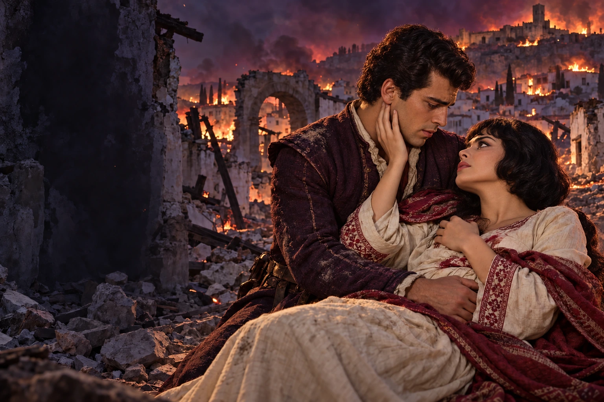
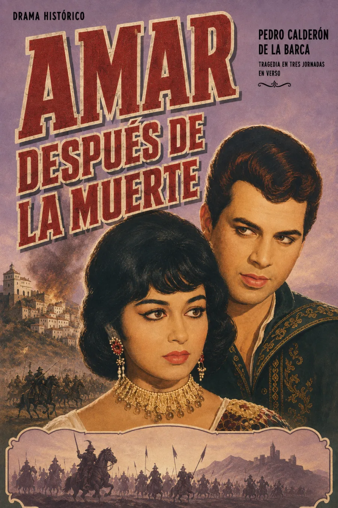

Audiolibros · Segunda Ola
Pedro Calderón de la Barca · Primera publicación: 1677
Amar después
de la muerte
El abrazo llega antes que el silencio.
Galera arde.
Entre sus ruinas, una voz reconoce al amado.

El amor permanece donde la guerra arrasa.
Grabación próximamente
Volumen

Reconocerse entre las ruinas
Drama de Pedro Calderón de la Barca ambientado en la rebelión de los moriscos de las Alpujarras (1568–1571), durante el reinado de Felipe II. Don Álvaro Tuzaní jura vengar la muerte de su esposa Clara, asesinada en la represión cristiana del levantamiento, en una de las pocas obras del teatro áureo que retrata con cierta simpatía el sufrimiento morisco frente a la violencia de la Corona.
Una voz devuelve un instante de vida al encuentro.
En la jornada III, Tuzaní encuentra a Clara herida entre las ruinas. Ella le pide que lleve un abrazo a su esposo; al reconocer su voz, comprende que ya está entre sus brazos. La imagen recrea ese instante: rostros, vestuario e iluminación son interpretaciones artísticas. El drama transforma el duelo en el impulso de una búsqueda de venganza.
Primera publicación en 1677 como El Tuzaní de la Alpujarra; edición de 1691 con el título Amar después de la muerte. Historia editorial · Revista de Filología Española. Jornada III · Biblioteca Virtual Miguel de Cervantes.
La lectura
Jornada I
Jornada II
Jornada III
Grabación próximamente. La lectura de la obra estará disponible aquí. Las grabaciones se incorporarán cuando estén preparadas.
Valoración

Bueno